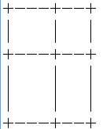
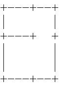
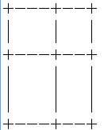
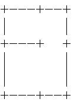

有一个平面，左下角是(0,0)，右上角是(A,B)。
有n个平行于y轴的栅栏a1..an，表示挡在(ai,0)到(ai,B)之间。
有m个平行于x轴的栅栏b1..bn，表示挡在(0,bi)到(A,bi)之间。
这样，平面被划成了(n+1)*(m+1)块。
现在要去掉某些栅栏的一部分，使得每一块都连通。
比如原来是这样：

可以去掉后变成这样：

求最少需要去掉多少长度的栅栏使得每一块都连通。
| F.A.Qs | Home | Discuss | ProblemSet | Status | Ranklist | Contest | 入门OJ | ModifyUser Xeonacid | Logout | 捐赠本站 |
|---|

